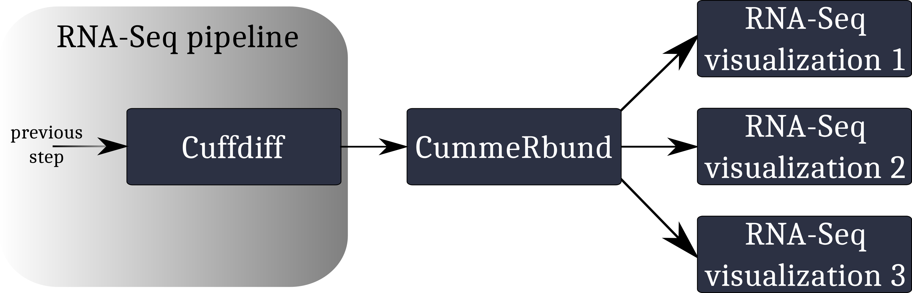
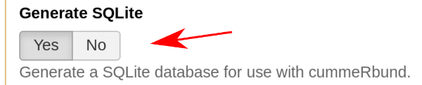
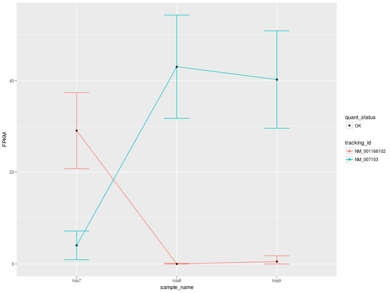
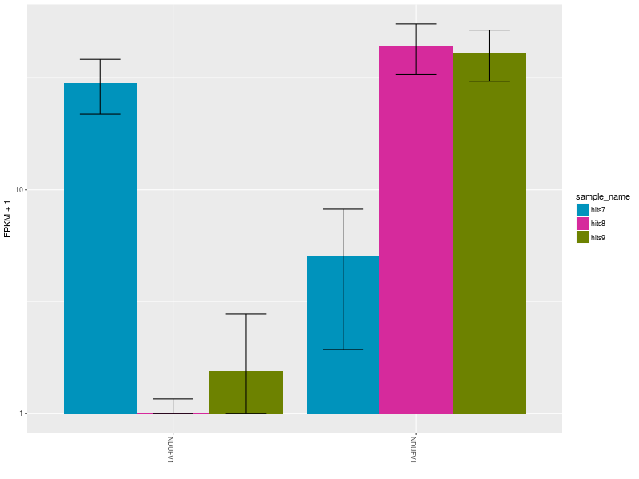

Visualization of RNA-Seq results with CummeRbund
 Andrea Bagnacani
Andrea Bagnacani
Overview
question Questionsobjectives Objectives
How are RNA-Seq results stored?
Why are visualization techniques needed?
How to select genes for visualizing meaningful results of differential gene expression analysis?
requirements Requirements
Manage RNA-Seq results
Extract genes for producing differential gene expression analysis visualizations
Visualize meaningful information
- Introduction to Galaxy Analyses
- Sequence analysis
- Quality Control: slides slides - tutorial hands-on
- Mapping: slides slides - tutorial hands-on
time Time estimation: 1 hour
Supporting Materials
last_modification Last modification: Jan 6, 2021
Introduction
RNA-Seq analysis helps researchers annotate new genes and splice variants, and provides cell- and context-specific quantification of gene expression. RNA-Seq data, however, are complex and require both computer science and mathematical knowledge to be managed and interpreted.
Visualization techniques are key to overcome the complexity of RNA-Seq data, and represent valuable tools to gather information and insights.
In this tutorial we will visualize RNA-seq data from the CuffDiff tool.
Agenda
In this tutorial, we will deal with:
Reasons for visualizing RNA-Seq results
To make sense of the available RNA-Seq data, and overview the condition-specific gene expression levels of the provided samples, we need to visualize our results. Here we will use CummeRbund.
CummeRbund is an open-source tool that simplifies the analysis of a CuffDiff RNA-Seq output. In particular, it helps researchers with:
- managing, integrating, and visualizing the data produced by CuffDiff
- simplifying data exploration
- providing a bird’s-eye view of the expression analysis by describing relationships betweeen genes, transcripts, transcription start sites, and protein-coding regions
- exploring subfeatures of individual genes or gene-sets
- creating publication-ready plots
A typical workflow for the visualization of RNA-Seq data involving CummeRbund:

CummeRbund reads your RNA-Seq results from a SQLite database. This database has to be created using CuffDiff’s SQLite output option.
details SQLite output with CuffDiff
Instruct CuffDiff to organize its output in a SQLite database to be read CummeRbund.

Importing RNA-Seq result data
hands_on Hands-on: Data upload
Create a new history
tip Tip: Creating a new history
Click the new-history icon at the top of the history panel
If the new-history is missing:
- Click on the galaxy-gear icon (History options) on the top of the history panel
- Select the option Create New from the menu
Import the
CuffDiff SQLitedatasettip Tip: Importing data via links
- Copy the link location
Open the Galaxy Upload Manager (galaxy-upload on the top-right of the tool panel)
- Select Paste/Fetch Data
Paste the link into the text field
Press Start
- Close the window
By default, Galaxy uses the URL as the name, so rename the files with a more useful name.
Rename the dataset to “RNA-Seq SQLite result data”
tip Tip: Renaming a dataset
- Click on the galaxy-pencil pencil icon for the dataset to edit its attributes
- In the central panel, change the Name field to
RNA-Seq SQLite result data- Click the Save button
By default, when data is imported via its link, Galaxy names it with its URL.
CuffDiff’s output data is organized in a SQLite database, so we need to extract it to be able to see what it looks like.
For this tutorial, we are interested in CuffDiff’s tested transcripts for differential expression.
hands_on Hands-on: Extract CuffDiff results
- Extract CuffDiff tool with the following parameters
- “Select tables to output”:
Transcript differential expression testingInspect the table
tip Tip: Inspecting the content of a file in Galaxy
- Click on the galaxy-eye (eye) icon (“View data”) on the right of the file name in the history
- Inspect the content of the file
Each entry is a differentially expressed gene, which is described in terms of the following attributes.
- test_id: A unique identifier describing the transcript being tested
- gene_id: The identifier of the gene being tested
- gene: The name of the gene being tested
- locus: The genomic coordinates of the gene transcript being tested
- sample_1: Label of the 1st sample
- sample_2: Label of the 2nd sample
- status: The test’s status:
- “OK” if test successful
- “NOTEST” if not enough alignments for testing
- “LOWDATA” if too complex or shallowly sequenced
- “HIDATA” if too many fragments in locus
- “FAIL” if a numerical exception prevented testing
- value_1: The gene’s FPKM in sample_1
- value_2: The gene’s FPKM in sample_2
- log2(fold_change): The log2 of the fold change (sample_1/sample_2). This reports the expression difference between condition one (sample_1) and condition two (sample_2)
- test_stat: The test statistic’s value, used to determine the significance of the observed change in FPKM
- p_value: The uncorrected p-value of the test statistic
- q_value: The False-discovery-rate-adjusted p-value of the test statistic
- significant: “yes” or “no”, depending on whether the p_value is greater then the FDR after Benjamini-Hochberg correction for multiple-testing. This tells whether the difference between the expression levels in condition one (sample_1) and condition two (sample_2) is significant
We want to keep only the significant differentially expressed genes.
question Questions
- How to retain only the significant differentially expressed genes?
- Which column stores this information?
solution Solution
- We need to filter on the column storing the record’s significance
- Column 14
Filtering and sorting
We now want to highlight the transcripts whose expression difference, the log2(fold_change), has been statistically assessed as both high and significant.
hands_on Hands-on: Extract CuffDiff’s significant differentially expressed genes
- Filter tool with the following parameters
- “Filter”: the extracted table from the previous step
- “With following condition”: an appropriate filter over the target column (see questions below when in doubt)
- “Number of header lines to skip”: the number of rows used for the table’s header
question Questions
- What column stores the information of significance for each record?
- Which conditional expression has to be set to filter all records on the selected column?
- How many rows are allocated for the table’s header?
- How many entries were originally stored in the table? And how many after the filtering operation?
solution Solution
- Column 14
- c14==’yes’
- 1
- ~140,000 (before filtering) vs. 219 (after filtering)
Review the meaning of each column, and look at your data.
- The differential expression values are stored in column 10
- The statistical score, assessing the differential expression significance, is stored in column 13 We will sort all records on the basis of their Q-score (column 13) and log2(fold_change).
- Sort tool: with the following parameters
- “Sort Dataset”: the filtered table
- “on column”:
13- “with flavor”:
Numerical sort- “everything in”:
Ascending order- param-repeat Insert Column selection, and parameterize the Sort tool to sort on column 10. Be careful of the sorting order!
- Are there any rows allocated for the table’s header? In that case, set “Number of header lines to skip” accordingly!
question Questions
- Which gene transcript has been statistically assessed as both high and significant?
solution Solution
1 LIMCH1
CummeRbund
CummeRbund generates two outputs:
- The plot, which visualizes our RNA-Seq results of interest
- The ggplot object responsible for generating the plot
In this section we will parametrize CummeRbund to create different kinds of plots from our input data.
hands_on Hands-on: Visualization
- CummeRbund tool with the following parameters
- param-repeat Insert plots
- “Width”:
800- “Height”:
600- “Plot type”:
Expression Plot
- “Expression levels to plot”:
Isoforms- “Gene ID”:
NDUFV1
The input data used to create the visualization comprise 3 conditions: hits7 (Patient 1), hits8 (Patient 2), and hits9 (Control).
Our first CummeRbund plot is the “Expression Plot” of the isoforms of gene NDUFV1, which shows the expression differences of isoforms NM_001166102 and NM_007103 among the three conditions. Error bars capture the variability of the distribution of FPKM values: the broader the distribution of FPKM values, the larger the corresponding error bar.

Our plot has a modest number of isoforms, and is therefore easy to read. However, with a high number of isoforms and expression variability among different conditions, the plot can look very busy. We can therefore change the visualization type by selecting another type of plot. Let’s change visualization.
hands_on Hands-on: Visualization
- CummeRbund tool with the following parameters
- param-repeat Click on “Insert plots”
- “Width”:
800- “Height”:
600- “Plot type”:
Expression Bar Plot
- “Expression levels to plot”:
Isoforms- “Gene ID”:
NDUFV1

The Expression Bar Plot of gene NDUFV1’s replicates NM_001166102 and NM_007103, shows the expression changes across the three aforementioned conditions.
comment Comment
These plots are shown also in this Galaxy video tutorial.
Let’s now create a heatmap to plot the expression levels of the significant differentially expressed gene isoforms obtained from our filter and sort operations. As a showcase example, let’s consider only the top 5 differentially expressed genes.
hands_on Hands-on: Visualization
- CummeRbund tool with the following parameters
- param-repeat Insert plots
- “Width”:
800- “Height”:
600- “Plot type”:
Heatmap
- “Expression levels to plot”:
Isoforms- “Gene ID”:
LIMCH1- “Gene ID”:
IFNL2- param-repeat Insert Genes
- “Gene ID”:
CXCL11- param-repeat Insert Genes
- “Gene ID”:
NUB1- “Cluster by”:
Both

Heatmap of significant differentially expressed isoforms of genes LIMCH1, IFNL2, CXCL11, NUB1. Differences in up- and down-regulation of certain gene isoforms across Patient 1 (hits7), Patient 2 (hits8), and Control (hits9), are visible in the lower and upper part of the heatmap.
comment Comment
For more sophisticated visualizations of your RNA-Seq analysis results, try selecting different CummeRbund plot options and parametrizations. Have a look also at CummeRbund’s manual. Alternatively, you can modify a plot’s style by changing CummeRbund’s R output! CummeRbund’s R outputs are ggplot objects. Look here to learn how to change fonts, colors, error bars, and more.
Conclusion
Visualization tools help researchers making sense of data, providing a bird’s-eye view of the underlying analysis results. In this tutorial we overviewed the advantages of visualizing RNA-Seq results with CummeRbund, and gained insights on CuffDiff’s big-data output by plotting information relative to the most significant differentially expressed genes in our RNA-Seq analysis.
keypoints Key points
Extract information from a SQLite CuffDiff database
Filter and sort results to highlight differential expressed genes of interest
Generate publication-ready visualizations of RNA-Seq analysis results
Useful literature
Further information, including links to documentation and original publications, regarding the tools, analysis techniques and the interpretation of results described in this tutorial can be found here.
Feedback
Did you use this material as an instructor? Feel free to give us feedback on how it went.

Citing this Tutorial
- Andrea Bagnacani, 2021 Visualization of RNA-Seq results with CummeRbund (Galaxy Training Materials). /training-material/topics/transcriptomics/tutorials/rna-seq-viz-with-cummerbund/tutorial.html Online; accessed TODAY
- Batut et al., 2018 Community-Driven Data Analysis Training for Biology Cell Systems 10.1016/j.cels.2018.05.012
details BibTeX
@misc{transcriptomics-rna-seq-viz-with-cummerbund, author = "Andrea Bagnacani", title = "Visualization of RNA-Seq results with CummeRbund (Galaxy Training Materials)", year = "2021", month = "01", day = "06" url = "\url{/training-material/topics/transcriptomics/tutorials/rna-seq-viz-with-cummerbund/tutorial.html}", note = "[Online; accessed TODAY]" } @article{Batut_2018, doi = {10.1016/j.cels.2018.05.012}, url = {https://doi.org/10.1016%2Fj.cels.2018.05.012}, year = 2018, month = {jun}, publisher = {Elsevier {BV}}, volume = {6}, number = {6}, pages = {752--758.e1}, author = {B{\'{e}}r{\'{e}}nice Batut and Saskia Hiltemann and Andrea Bagnacani and Dannon Baker and Vivek Bhardwaj and Clemens Blank and Anthony Bretaudeau and Loraine Brillet-Gu{\'{e}}guen and Martin {\v{C}}ech and John Chilton and Dave Clements and Olivia Doppelt-Azeroual and Anika Erxleben and Mallory Ann Freeberg and Simon Gladman and Youri Hoogstrate and Hans-Rudolf Hotz and Torsten Houwaart and Pratik Jagtap and Delphine Larivi{\`{e}}re and Gildas Le Corguill{\'{e}} and Thomas Manke and Fabien Mareuil and Fidel Ram{\'{\i}}rez and Devon Ryan and Florian Christoph Sigloch and Nicola Soranzo and Joachim Wolff and Pavankumar Videm and Markus Wolfien and Aisanjiang Wubuli and Dilmurat Yusuf and James Taylor and Rolf Backofen and Anton Nekrutenko and Björn Grüning}, title = {Community-Driven Data Analysis Training for Biology}, journal = {Cell Systems} }